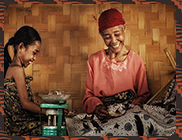
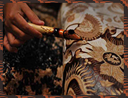
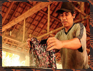
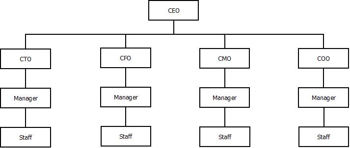

HomeMade adalah singkatan dari Ome dan Made yaitu nama dua sahabat yang merintis sebuah perusahaan ritel di Indonesia dalam seni Batik. Tapi, HomeMade memiliki arti sendiri jika diartikan ke dalam bahasa Inggris yaitu menjadi Buatan Rumah yang menjadi dasar bahwa Batik adalah buatan Rumah Indonesia.
|
Target Konsumen
Target pasar kami ialah pada usia Kalangan Muda (lebih dari 13 tahun dan kurang dari 35 tahun)    |
MV Promote
|
Struktural
 |